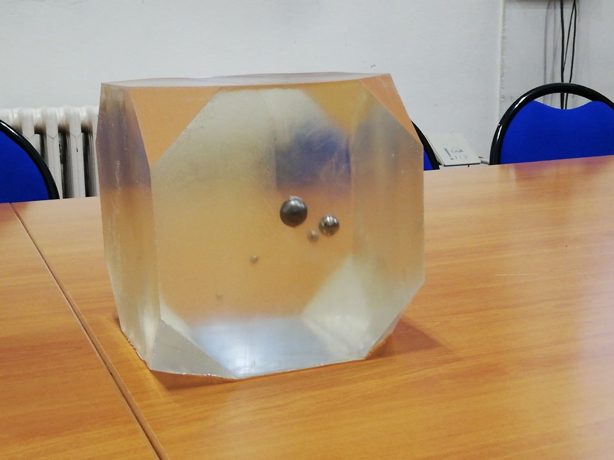

AVNIR-1 — Time-Reversal and Topological Imaging for Ultrasonic Defect Detection
- 1. Project Snapshot
- 2. Shared Context
- 3. Student-Specific Scope
- 4. Objectives
- 5. Methodological Workflow
- 6. Expected Deliverables
- 7. Validation Targets
- 8. Possible Task Split for 2 Students
- 9. Milestones
- 10. Practical Recommendations
- 11. References and Starting Resources
- 12. Expected Level and Pedagogical Value
1. Project Snapshot
-
Level: M1 CSMI
-
Team: 1 student, or 2 students for an extended scope
-
Period: March 10 — May 30 (10 weeks)
-
Indicative workload: 60—80 h total, with possible extension for highly involved students
-
Main themes: inverse problems, wave propagation, adjoint methods, numerical simulation, imaging
-
Suggested implementation environment: Python + NumPy/SciPy/Matplotlib/Jupyter

This project is inspired by time-reversal methods and topological imaging for the detection of hidden defects or inclusions inside a structure. The main pedagogical goal is to connect:
-
a forward wave propagation model,
-
an adjoint / time-reversed field,
-
and an imaging functional able to reveal the likely position of internal defects.
The project should remain accessible for an M1 CSMI student. Therefore, the recommended baseline is a simplified 2D time-domain model with synthetic data. A more ambitious version can be developed if two students are involved or if the student shows strong autonomy and motivation.
2. Shared Context
The reference scientific context is the detection of internal defects using waves measured by sensors placed on part of the boundary of a structure. The provided article and slides motivate the following workflow:
-
simulate the wave field in a healthy reference medium,
-
generate or use measurements in a real / defective medium,
-
build the residual between both signals on the sensor array,
-
time reverse this residual and backpropagate it as an adjoint field,
-
combine forward and adjoint fields into a topological energy map to localize defects.
For this M1 project, the goal is not to reproduce the full industrial elastodynamic framework in 2D or 3D. Instead, the goal is to build a clean and reproducible numerical prototype that demonstrates the principle and allows a first quantitative study.
A practical imaging functional for the project is the topological energy
g0(x) = integral from 0 to T of ||U0(x,t)||^2 ||V0(x,t)||^2 dt,
where U0 is the forward field in the healthy medium and V0 is the adjoint (time-reversed) field. The student may also discuss the link with the more rigorous topological gradient, but the implementation target should remain the topological energy or a closely related indicator.
Common numerical ingredients:
-
2D rectangular domain (plate or block),
-
one or several point-like or line sources,
-
a small array of receivers on one side of the domain,
-
one or several defects/inclusions represented in a simplified way,
-
pulse excitation in time,
-
visualization of wave fields and imaging maps.
Suggested benchmark cases:
-
one isolated defect,
-
two defects with different sizes,
-
study of the effect of sensor count,
-
optional study of additive noise.
3. Student-Specific Scope
3.1. Baseline scope (1 student)
The student will implement a compact prototype with the following minimal scope:
-
choose a simple wave model in time domain (preferably scalar acoustic wave equation, or a very simplified elastic setting),
-
simulate the healthy configuration,
-
simulate a defective configuration to create synthetic measurements,
-
compute the residual on the sensors,
-
solve the adjoint problem by backpropagating the time-reversed residual,
-
compute and visualize a topological energy map,
-
evaluate whether the defect location is recovered correctly.
This baseline scope is realistic for 60—80 h total.
3.2. Extended scope (2 students or strong involvement)
With two students, or with a very strong individual involvement, the project can be extended in one or several directions:
-
multiple defects,
-
comparison of several source or sensor configurations,
-
sensitivity to measurement noise,
-
comparison between scalar and vectorial models,
-
first attempt at iterative refinement,
-
estimation of localization error and resolution limits,
-
comparison with a simpler migration/backprojection method.
3.3. Out of scope for the baseline
The following items are explicitly considered stretch goals and should not be required for the basic validation:
-
full 3D modeling,
-
full industrial ultrasonic measurement chain,
-
complete elastodynamic topological gradient implementation,
-
large-scale HPC implementation.
4. Objectives
-
Understand the principle of time reversal, retropropagation, and focalization in a wave propagation setting.
-
Build a reproducible numerical workflow combining forward simulation, synthetic measurements, and adjoint backpropagation.
-
Implement and analyze a topological-energy-type imaging functional for defect localization.
-
Validate the method on a small number of test cases and discuss its strengths and limitations.
5. Methodological Workflow
5.1. Step 1 — Literature and model choice
The student starts from the provided paper and slides, then reformulates the method at an M1 level. The expected outcome is a short note explaining:
-
the forward problem,
-
the measurement residual,
-
the adjoint / time-reversal idea,
-
the imaging functional,
-
the expected qualitative behavior of focalization.
5.2. Step 2 — Forward simulation in a healthy medium
Implement a simple time-domain solver or use a lightweight existing numerical framework. The emphasis is on clarity and reproducibility rather than sophistication.
5.3. Step 3 — Synthetic defective measurements
Create one or several defective configurations and record signals at the receiver locations. These synthetic signals play the role of experimental measurements.
5.4. Step 4 — Adjoint backpropagation
Time reverse the residual between defective and healthy signals and use it as the source term for the adjoint field.
6. Expected Deliverables
-
Source code repository with a clear structure (
src/,notebooks/,cases/,figures/,README). -
One reproducible notebook or driver script that runs the main benchmark from start to finish.
-
A short technical note or report explaining the method, numerical choices, and main results.
-
A final presentation with figures illustrating forward fields, adjoint fields, and topological energy maps.
-
A short discussion of what would be needed to move from the prototype to a more realistic structural monitoring setup.
7. Validation Targets
The project will be considered successful if the student can demonstrate most of the following:
-
one working benchmark with a clearly localized defect,
-
a convincing visualization of the adjoint/time-reversal focusing effect,
-
a topological energy map whose main peak is near the true defect,
-
a short analysis of parameter influence (at least one among defect size, sensor number, or noise),
-
clean and reproducible code.
8. Possible Task Split for 2 Students
8.1. Student A — Forward and data generation
-
numerical model,
-
source signal,
-
healthy and defective simulations,
-
receiver extraction,
-
benchmark preparation.
9. Milestones
-
Week 1 (March 10—16): read the paper/slides, define the simplified model, set up repository and numerical environment.
-
Week 2: implement the source term and a first healthy-medium simulation.
-
Week 3: implement synthetic defective measurements and validate receiver signals.
-
Week 4: implement the time-reversed residual and adjoint backpropagation.
-
Week 5: compute a first topological energy map for a single defect.
-
Week 6: improve visualization and check localization quality.
-
Week 7: add one extension: multiple defects, fewer sensors, or noise.
-
Week 8: consolidate the numerical study and prepare reproducible experiments.
-
Week 9: write the report and prepare final figures.
-
Week 10 (until May 30): final presentation, code cleanup, and submission.
10. Practical Recommendations
-
Start with the simplest possible geometry and a synthetic setup.
-
Favor a robust and readable prototype over an over-ambitious model.
-
Keep all experiments reproducible.
-
Save representative plots at each step: source pulse, receiver signals, residual, adjoint field snapshots, imaging map.
-
If time is short, prioritize single-defect localization before any extension.
12. Expected Level and Pedagogical Value
This project is well suited to an M1 CSMI profile because it combines:
-
PDE-based modeling,
-
numerical simulation,
-
inverse problems,
-
signal interpretation,
-
and scientific visualization.
It also offers a good balance between theory and implementation. The baseline project is manageable in 60—80 h, while the extended version naturally scales to a 2-student project.